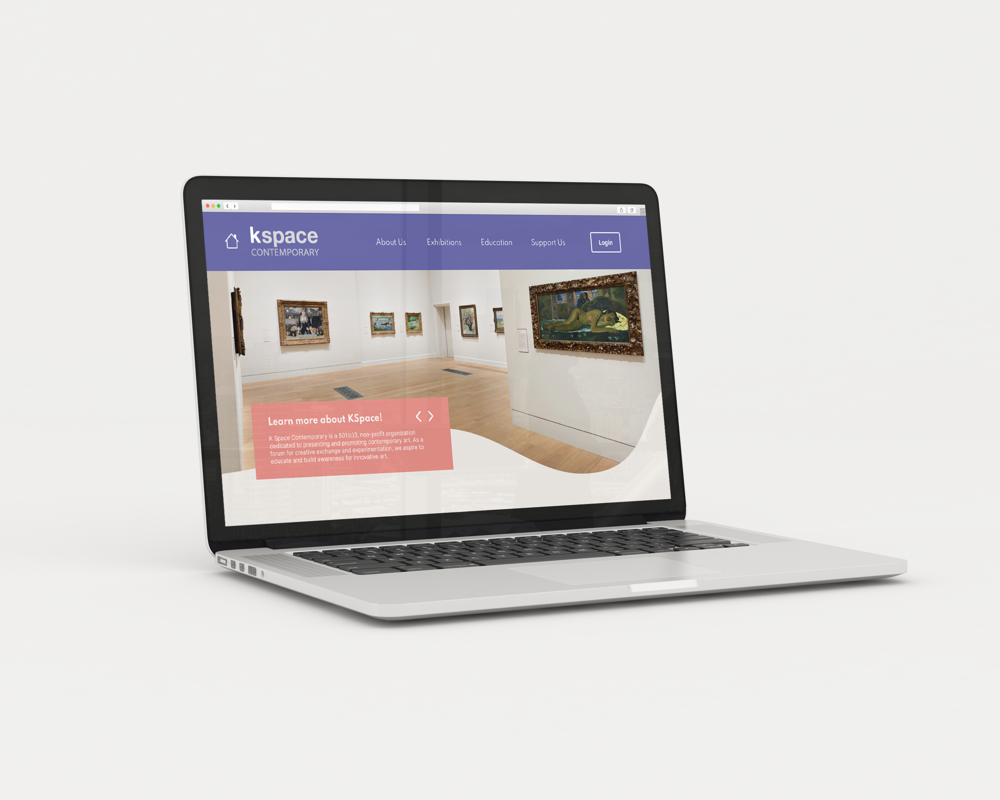

KSpace Website Redesign
Project Overview
KSpace Contemporary is an non-profit art studio and gallery based in Texas. They have a strong connection with their community and provide education, host events, and rent studio spaces to artists. With such a focus on bringing in members of all ages, their website needed to be accessible, organized, and united by a cohesive design, all of which their current website does not achieve. From our interview with a stakeholder at K Space, we gathered what was most valuable to them regarding their website was “utilizing it as a tool to share current and previous exhibitions and promote events and education programs.”
“As a non-profit organization, our goals are to present and promote contemporary art in our community. We aspire to educate and build awareness for innovative art in South Texas.”
- Nicole Schiller, Education and Artist Coordinator
This quote gave us a great perspective of K Space’s motives and specifically guided us to represent their impact on South Texas through art and education.
Research

We began by interviewing the cleint on what their goals were for the the site and what needs had to be met. Their site needed to be able to inspire users to donate, sign up for classes or attend their exhibits. Following this, we did a thorough evaluation of their website and how it met the heuristic requirements. We found a number of flaws in the site's application of basic design rule's, such as grid layouts and contrast. Non-profit organizations could technically be considered to compete with each other as donations are a primary source of income and are a finite resource.
By analyzing other art non-profit's websites, we were able to see where we could take KSpace's site. Our teammate who had the connection with KSpace interviewed some of the local artists and staff members of KSpace and asked them what they would want to see change about the website. What came up often was that the site had to convey KSpace's personality and engage the user through community and ease of use. A low barrier to entry was important to ensure the site was not frustrating to use.

Upon gathering the data we needed, we sorted the interviewee's comments into an empathy map to determine the general wants, thoughts, and feelings of users. We crafted this data into a user persona and built story boards going over scenarios in which the user would access the website and use it's features. Our team brainstormed as many ideas for new features or alterations as we could and sorted those into a value proposition diagram to determine the most important aspects we needed to address within the timeframe. The decided tasks were to redesign the home, education/programs, donations, and exhibits pages with an emphasis on simplifying the navigation and bringing attention to the most important functions for KSpace.
Problem Statement
KSpace Contemporary Gallery has issues with engaging users because their website currently lacks cohesive branding, ignores basic design principles and a clear call to action for their programs.
Therefore, we believe that our team can bring an inviting, more appealing aesthetic that aligns with their branding, highlighting the gallery’s programs, exhibits and public art, compelling users to visit and further interact with the website.
Iteration

Based on the story boards, we made four user flows targeted to the function of each page. The Home page would provide an overview of the site and encourage users to venture deeper, while the Education/Programs, Exhibits, and Donations would each perform their obvious primary function. We then each sketched out wireframes discussed what ideas we thought we could combine or do away with. After building and prototyping the wireframes in Figma, we had five users test them in the hopes that we find any issues or gain valuable user suggestions. Feedback proved to be very minimal in terms of defining aspects we could improve. Short on time, we refined our prototype with our chosen brand revamp, taking inspiration from KSpace's brand color palette and the sandy, sun-burnt colors of the Texas beach town that the non-profit is based in.
Final Prototype